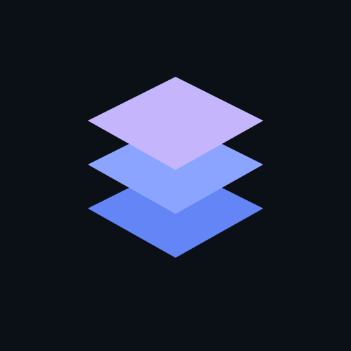
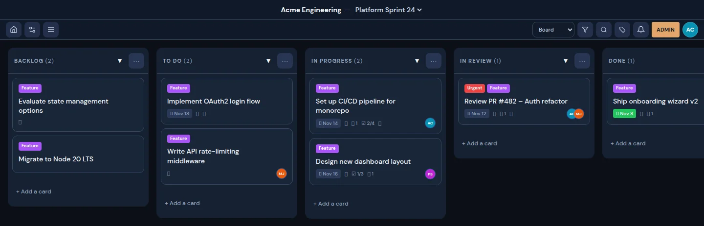

Make progress visible
Organize cards into lists across multiple boards and workspaces.

strataPROJECT MANAGEMENT, VISUALLY
Boards, tasks, and the details that move them forward. All in one place.

Move between board, table, and calendar views. Keep the context close, from the first idea to the last checklist item.
Organize cards into lists across multiple boards and workspaces.
Add checklists, assignments, comments, and attachments to cards.
Search with member, label, and overdue operators. Restore cards and lists from the archive.
Manage users, roles, and workspace memberships with a protected admin panel.
02 / GET STARTED
Run Strata locally with Node.js and npm.
IN YOUR TERMINAL
git clone https://github.com/Zuriel-Labs/strata.git
cd strata
npm install
npm run dev